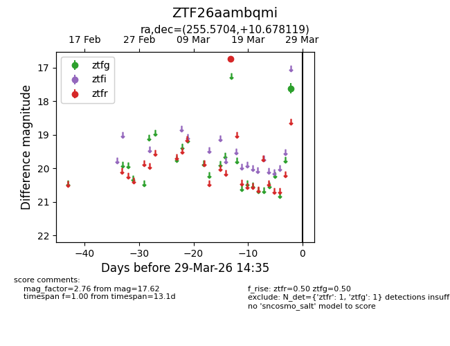
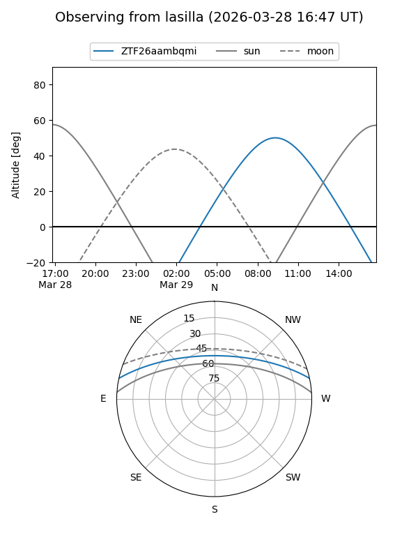
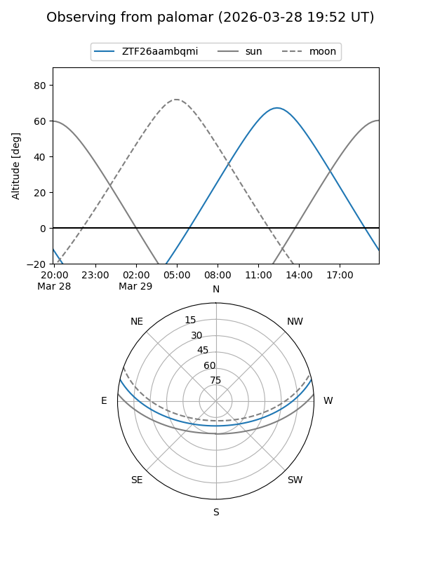

ZTF26aambqmi
Target ZTF26aambqmi at 2026-03-29 14:38
Aliases and brokers:
FINK: link
Lasair: link
ALeRCE: link
alt names
ZTF26aambqmi (ztf,fink_ztf)
Coordinates:
equatorial (ra, dec) = 255.5704,+10.67812
equatorial (HMS+DMS) = 17:02:16.90,+10:40:41.23
galactic (l, b) = (30.2746,+29.04300)
Flags:
Photometry:
last ztfg=17.62, ztfr=16.73
1 ztfg, 1 ztfr detections
Lightcurve

Visibility


Additional plots